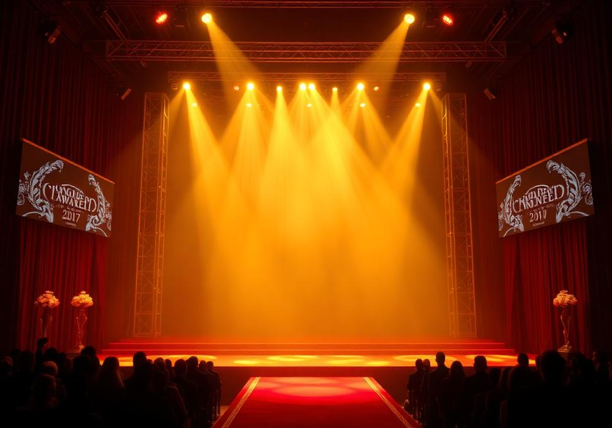

Om evenemanget

Golden Rooster Awards (Guldtuppen) är ett av Kinas mest kända filmpriser. Galan delar ut priser i kategorier som bästa film, bästa regi och bästa huvudroll, och är en del av China Golden Rooster and Hundred Flowers Film Festival. Evenemanget hålls sedan flera år tillbaka i staden Xiamen och sänds i kinesisk tv.
För fans av kinesisk film och drama är galan ett tillfälle att se sådespelare på röda mattan och följa vilka produktioner som uppmärksammas under året. Programmet nedan är ett exempel på hur en galadag brukar se out, och är alltså inte ett officiellt schema.
Program (exempel på galadag)
| Tid | Programpunkt |
|---|---|
| Röda mattan öppnar | |
| Galan börjar och sänds i tv | |
| Huvudpriserna delas ut | |
| Pressträff med pristagarna |
Praktisk information
Plats: Xiamen, provinsen Fujian, Kina. Språk: mandarin. Biljetter till själva galan är normalt inte öppna för allmänheten, men delar av festivalen har publika visningar.
Anmäl ditt intresse
Fyll i formuläret om du vill vara med när vi i den svenska fanklubben följer galan tillsammans, eller om du vill hjälpa till med bevakning och översättning.